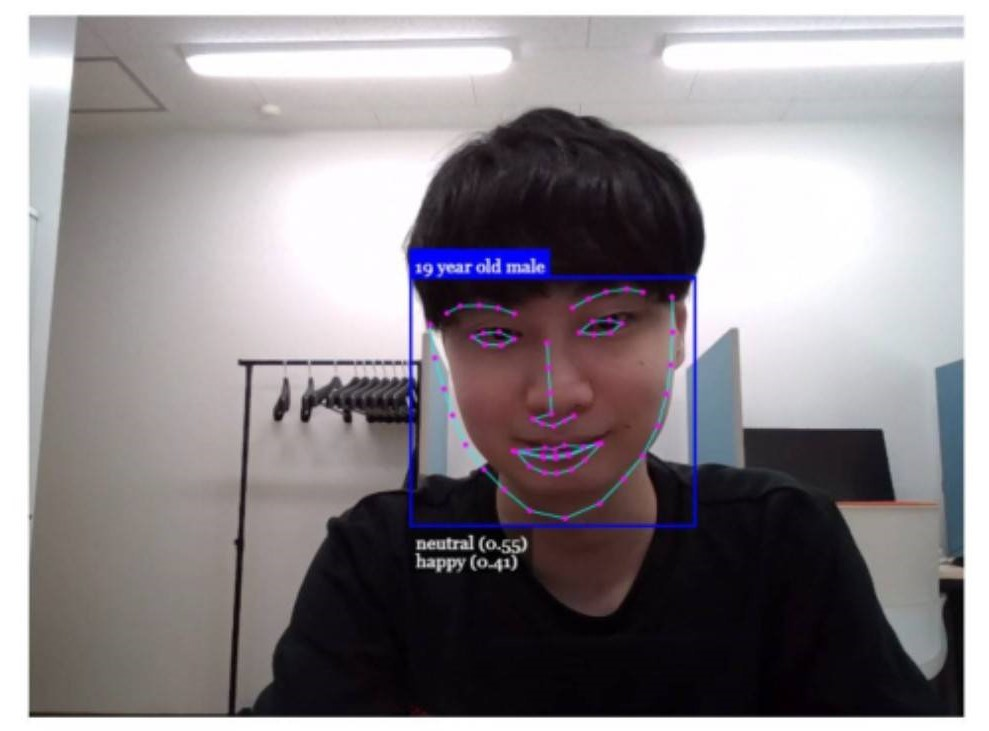

感情認識アプリ（プロトタイプ）
概要: 年齢・性別・感情をリアルタイムで推定するWebアプリです。 JavaScriptライブラリ「face-api.js」を用いて、カメラ映像から顔を検出し、 顔の68箇所の特徴点を抽出・解析することで感情などを推定しています。 本アプリは、長崎大学情報データ科学部の「実社会課題解決プロジェクトB」にて、 開発した成果物です。 私はチームリーダーとして5人チームの意見を取りまとめながら、自身が学習してきたWeb系技術を活かして制作を行いました。
使用技術: HTML, CSS, JavaScript, face-api.js
開発期間: 2022年12月〜2023年2月
実際の画像:

URL: 作品のリンク